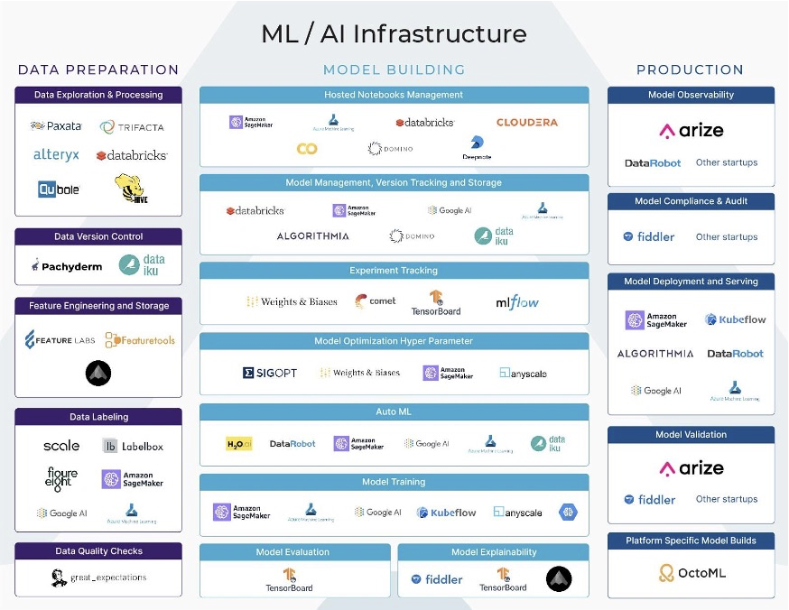

Rozdział 2 Quiz
2.1 Motywacja
Trening modelu uczenia maszynowego to dopiero początek: wcześniej trzeba pozyskać i przygotować dane, następnie go udostępnić, a po udostępnieniu monitorować jego jakość.

W tym „cyklu życia modelu” pracujemy z wieloma komponentami i artefaktami:
- Komponenty „przetwarzają” dane, są najczęściej skryptami komputerowymi (lub modułami dostępnymi w formie kontenerów)
- Artefakty są produktami i/lub materiałem wejściowym dla komponentów
Przykładowe komponenty to: przygotowanie danych, modelowanie, udostępnianie, monitoring, dotrenowanie… Przykładowe artefakty zas to: dane, modele, aplikacje
Komponenty też nie są proste… Składa się na nie najczęściej wiele różnych, złożonych działań.
Artefakty zaś wymagają składowania w dedykowanych strukturach, takich jak:
- Repozytoria cech (features stores)
- Repozytoria modeli (model stores)
- Repozytoria metadanych (metadata stores)
Całość trzeba przy tym:
monitorować:
Jakość i charakterystyki danych (np. dryf danych)
Wyniki eksperymentów
Jakość modeli (np. dryf modeli)
… kontrolować
- Kontrola przebiegu procesu
- Zarządzanie parametrami przebiegów…
i wersjonować
- Dane
- Modele.
Dane zadanie/proces ML może być realizowane:
- Na różne sposoby
- Z wykorzystaniem różnych bibliotek i różnych narzędzi
- W różnych środowiskach (lokalnie, serwery w chmurze, chmura bezserwerowa, urządzenia mobilne.

Źródło: https://ai-infrastructure.org/maximizing-ml-infrastructure-tools-for-production-workloads-arize-ai/
Na szczęście, pomaga nam w tym wiele różnych bibliotek i narzędzi. Krajobraz ten szybko się zmienia.
2.2 Cele kursu
Co zatem warto wiedzieć? Potrafić?
O wiele ważniejsza od znajomości konkretnych narzędzi i technik jest wiedza o tym, co robić (w danej sytuacji), a nie jak to robić. Świadomość najważniejszych, w miarę uniwersalnych etapów, czynności, metod i dobrych praktyk (np. MLOps). I zdolność ich zastosowania w praktyce.
Podczas tego kursu:
- Stworzysz projekt prostej architektury rozwiązania uczenia maszynowego uwzględniającego najważniejsze etapy cyklu życia modelu
- Zaimplementujesz tę architekturę w wybranym środowisku wykorzystując różne, dedykowane biblioteki Python
- Stworzysz dokumentację i plan uruchomienia takiego projektu z wykorzystaniem dobrych praktyk metodyki MLOps.
2.3 Warsztaty
Pracę na ćwiczeniach podzielimy na 5 etapów:
- Stworzenie komponentów umożliwiających
- trening
- uruchomienie
- i monitoring modeli
- Implementację tych komponentów w postaci kontenerów Docker (opcjonalnie: Kubernetes lub Dataiku)
- Opracowanie dokumentacji całej architektury.

W pracach wykorzystamy następujące narzędzia:
- Pakiet MLFlow
- Środowisko Docker/Kubeflow
- Platformę Dataiku.
Na końcową dokumentację złożą się:
- Opis problemu: Co i dlaczego modelujemy?
- Analiza potrzeb.
- Krótka charakterystyka organizacji, dla której trenujemy model (1 akapit)
- Prognozowana częstość dotrenowywania
- Złożoność obliczeniowa algorytmu
- Ilość i złożoność danych.
- Rekomendowana architektura (implementacja w diagrams.net z łączami do GitHub (artefakty i komponenty))
- Dokumentacja implementacji:
- Komponenty
- Artefakty
- Środowisko uruchomieniowe
- Dyskusja wyników (ekrany z poszczególnych faz):
- Dane
- Modelowanie
- Monitoring.